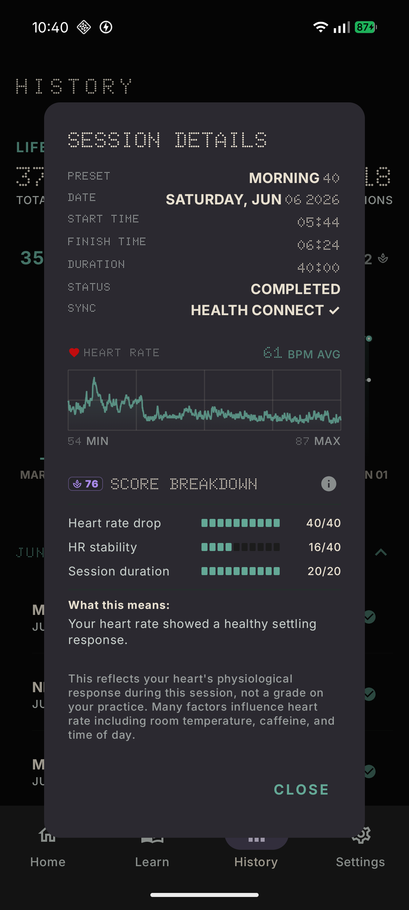
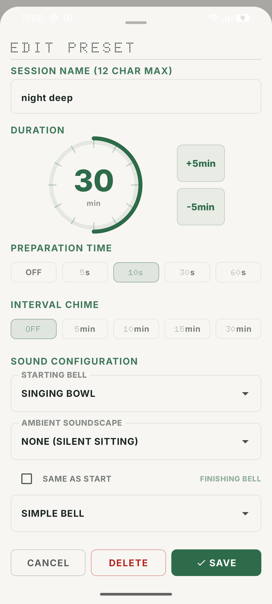

Precision Setup
A zero-chrome HUD designed for the serious practitioner. The high-fidelity rotary dial allows for tactile, distraction-free session setup. The breathing action pivot provides a biological visual anchor for your focus.

Biometric Insight
The Session Calm Score analyzes heart rate samples via Health Connect to provide a real-time settling score. No external servers—all biological processing happens locally on your hardware.

Atmospheric Depth
Immerse yourself in procedurally generated soundscapes. From Deep Rain to the rhythmic pulse of Ocean Waves, the ambient engine facilitates deep stillness while masking digital noise.

INFINITY MODE
Sit without a ceiling. A safe-hold stop mechanism ensures intentionality.
7 TRADITIONS
Built-in guide covering Breath Awareness, Mantra, and Self-Inquiry.
DRIVE BACKUP
Securely sync presets and history using your personal Google Drive storage.